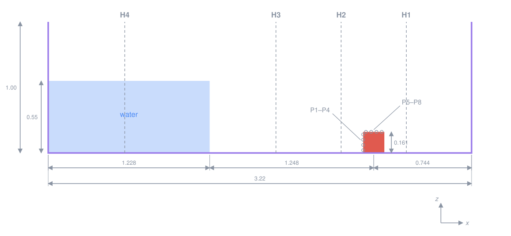
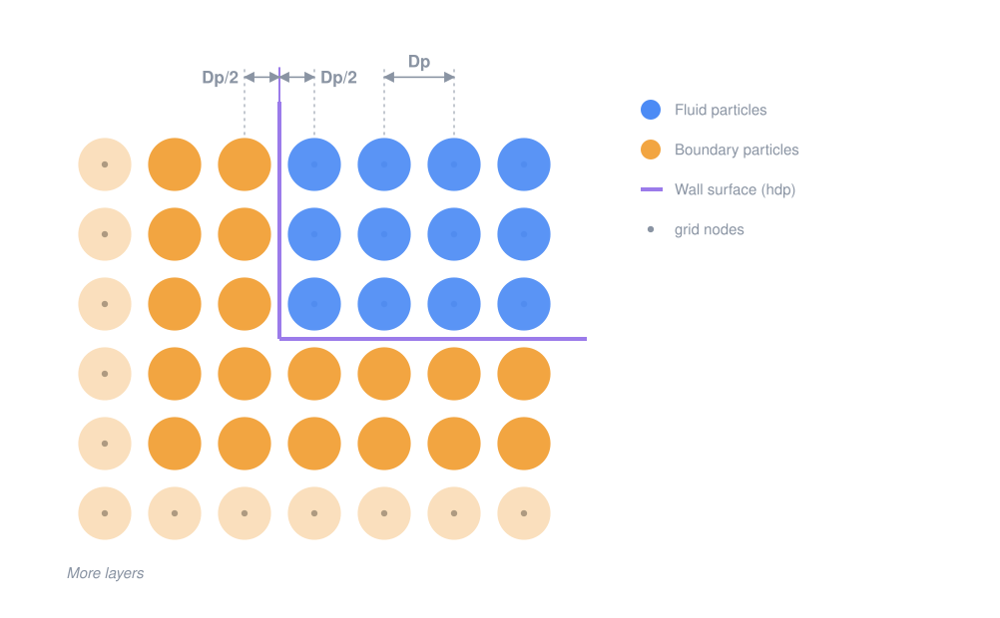
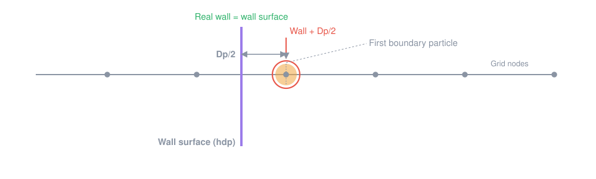
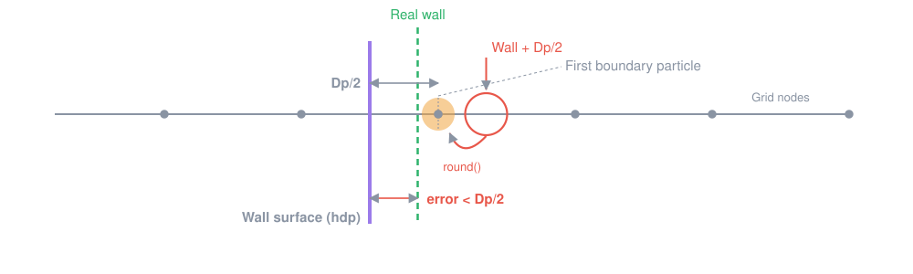
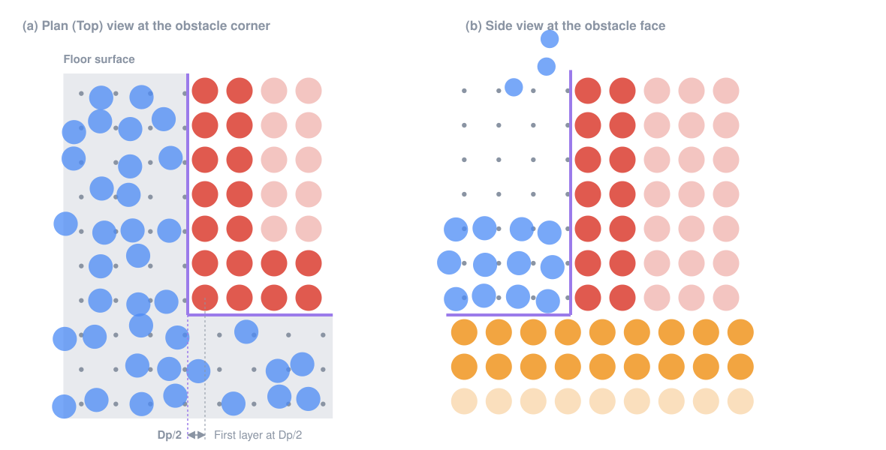
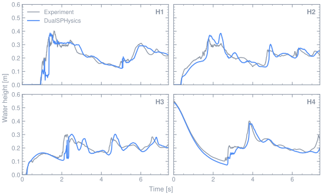
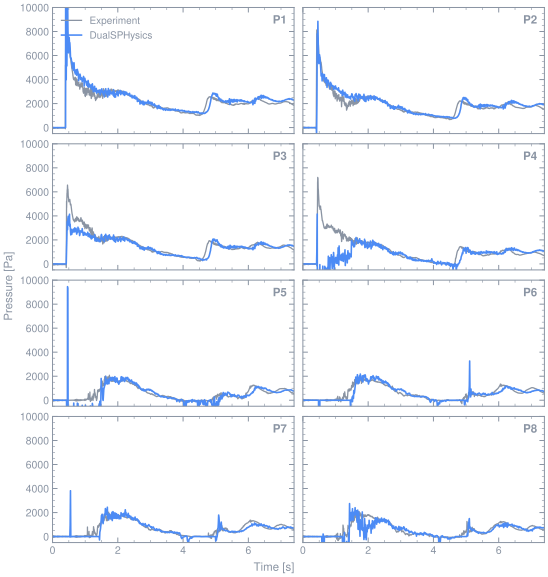

Dambreak 3D¶
Under review by Bonaventura Tagliafierro
This benchmark is a 3-D dambreak with an obstacle. A rectangular column of water, held at rest, is released at \(t=0\), and it collapses under gravity. The water flows and runs along the tank, hitting a fixed box downstream, and running over the obstacle. The water level is measured at four gauge positions and the pressure is sampled at eight sensors on the obstacle; a final comparison is presented against the experimental data of SPHERIC Benchmark Test 02.
The case is supplied in examples/benchmarks/01_Dambreak. This page explains its configuration in detail, and in particular how the geometry is placed with respect to the particle grid.
What's Covered in This Tutorial
- Defining a case by its real dimensions, independently of the particle spacing
Dp - Placing the particle grid to match the wall position
- The rounding functions
roundposandroundposx/y/z, and how to use them - Building the hdp geometry for mDBC with
layers, and drawing functions - Drawing a body with FreeDraw, placing its particles according to mDBC requirements
- MeasureTool post-processing, and comparison with the experiment
The general idea is also summarized in Aligning geometry with the particle grid.
Video: To be updated.
Case configuration¶
Physical setup¶

| Element | Dimensions [m] | Position |
|---|---|---|
| Tank | 3.22 × 1.00 × 1.00, open top | from \(x=0\) to \(x=3.22\), centered on \(y=0\), floor at \(z=0\) |
| Water column | 1.228 × 1.00 × 0.55 | against the left wall |
| Obstacle | 0.161 × 0.403 × 0.161 | centered at \((2.476, 0)\), on the floor |
| Particle spacing | \(Dp = 0.00805\) |
The experiment measures \(x\) from the dry end of the tank, while the model puts the reservoir at \(x=0\), so that \(x_{\mathrm{model}} = 3.22 - x_{\mathrm{reference}}\). The water is labeled mkfluid=0, the tank mkbound=0, and the obstacle mkbound=50.
Physical constants¶
<constantsdef>
<gravity x="0" y="0" z="-9.81" comment="Gravitational acceleration" units_comment="m/s^2" />
<rhop0 value="999" comment="Reference density of the fluid" units_comment="kg/m^3" />
<rhopgradient value="2" comment="Initial density gradient 1:Rhop0, 2:Water column, 3:Max. water height (default=2)" />
<hswl value="0" auto="true" comment="Maximum still water level to calculate speedofsound using coefsound" units_comment="metres (m)" />
<gamma value="7" comment="Polytropic constant for water used in the state equation" />
<speedsystem value="0" auto="true" comment="Maximum system speed (by default the dam-break propagation is used)" />
<coefsound value="20" comment="Coefficient to multiply speedsystem" />
<speedsound value="0" auto="true" comment="Speed of sound to use in the simulation (by default speedofsound=coefsound*speedsystem)" />
<coefh value="1.3" comment="Coefficient to calculate the smoothing length (h=coefh*sqrt(3*dp^2) in 3D)" />
<cflnumber value="0.2" comment="Coefficient to multiply dt" />
</constantsdef>
Fluid: water with reference density 999 kg/m³ under gravity \((0,0,-9.81)\) m/s². rhopgradient=2 indicates that the water is initialized with a hydrostatic density profile computed from the maximum water height.
Speed of sound: the entries with auto="true" are calculated by GenCase. The still-water level hswl is taken from the water height (0.55 m), and the system speed is the dam-break velocity taken as \(\sqrt{g\,h_{\mathrm{swl}}}\); the speed of sound is then computed considering the multiplier coefsound = 20.
Smoothing length: in 3D, \(h = \mathrm{coefh}\,\sqrt{3}\,Dp = 1.3\sqrt{3}\times0.00805 = 0.0181\) m. Each particle interacts with neighbors up to \(2h\) = 4.5·Dp away. This information is used to define the number of boundary layers needed for correct simulations.
Time step: cflnumber=0.2 scales the time step that the solver computes at every step, to account for the Courant condition.
The values of coefsound and of the smoothing length are also available as the variables CoefSound and H in <parameters>, where they are used to define the viscosity.
Geometry definition¶
Real dimensions and particle spacing¶
All dimensions are defined once, as constants in case/casedef/geometry/predefinition:
<newvarcte waterHeight="0.55" _rem="Water level" />
<newvarcte waterLength="1.228" _rem="Water column length (test case definition)" />
<newvarcte timeMax="7.40" />
<newvarcte timeOut="0.01" />
<newvarcte domainDown="0" />
<newvarcte domainUp="1.228+1.248+0.744" />
<newvarcte domainBeach="domainUp" />
<newvarcte domainWidthY="1.00" />
<newvarcte domainHeight="1.00" />
<newvarcte BoxPosX="1.228+1.248" _rem="Centre of the box in x" />
<newvarcte BoxPosY="0" _rem="Centre of the box in y" />
<newvarcte BoxPosZ="0" _rem="Base of the box" />
<newvarcte BoxLength="0.161" />
<newvarcte BoxWidth="0.403" />
<newvarcte BoxHeight="0.161" />
<newvarcte Dp="BoxLength/20" />
<newvarcte Dpm="Dp/2" />
Real dimensions: the tank length is written as the sum of the three distances given in the test description (1.228 + 1.248 + 0.744 = 3.22 m), and the obstacle center as 1.228 + 1.248 = 2.476 m, so that you can track them back to Figure 1.
Variables: Dp is the particle spacing, taken as BoxLength/20 = 0.00805 m, so that the obstacle is 20 particles long and high. We define the Dpm as the half spacing, which we use in almost every position below. The expressions are evaluated by the expression solver implemented in GenCase.
The real geometry is then collected into the Def* constants, with one origin and one size per object:
<!-- Nominal dimensions of tank and box -->
<newvarcte DefTankpx="domainDown" DefTankpy="-domainWidthY/2" DefTankpz="0" />
<newvarcte DefTanksx="abs(domainDown)+domainBeach" DefTanksy="domainWidthY" DefTanksz="domainHeight" />
<newvarcte DefBoxpx="BoxPosX-BoxLength/2" DefBoxpy="BoxPosY-BoxWidth/2" DefBoxpz="BoxPosZ" />
<newvarcte DefBoxsx="BoxLength" DefBoxsy="BoxWidth" DefBoxsz="BoxHeight" />
DefTankp* is the inner corner of the tank, \((0, -0.50, 0)\), and DefTanks* its inner size; DefBoxp* is the lower corner of the obstacle, \((2.3955, -0.2015, 0)\), and DefBoxs* its size. None of these constants depends on Dp.
From real geometry to particles¶
mDBC needs the position of the wall surface (the hdp geometry), from which the normal vectors of the boundary particles are computed. In this case, the geometry is placed following two rules:
- Each wall surface lies exactly halfway between the boundary particles and the fluid particles: the first boundary layer is Dp/2 behind it, and the first fluid particle Dp/2 in front of it.
- This holds for any
Dp. When a real dimension is not a whole number ofDp, the wall is moved to the nearest position that satisfies the first rule; the error is always smaller than Dp/2, so the geometry converges to the real one asDpdecreases.
The fluid can only be placed on the regular particle lattice, so the walls in contact with the water are placed on that lattice. The obstacle is dry at \(t=0\), so it is drawn at its exact real position instead (see Obstacle).

The particle lattice¶
GenCase creates particles only at the nodes of a regular lattice (or Cartesian grid) with spacing Dp, initialized at pointref. Here pointref and pointmin are the same point, placed Dp/2 plus ten spacings outside the inner corner of the tank:
<!-- Domain limits -->
<newvarcte PminX="DefTankpx-Dpm-10*Dp" PminY="DefTankpy-Dpm-10*Dp" PminZ="DefTankpz-Dpm-10*Dp" />
<newvarcte PmaxX="DefTankpx+DefTanksx+10*Dp" PmaxY="DefTankpy+DefTanksy+10*Dp" PmaxZ="DefTankpz+DefTanksz" />
<definition dp="#Dp">
<pointref x="#PminX" y="#PminY" z="#PminZ" comment="Origin of the particle grid: same as pointmin" />
<pointmin x="#PminX" y="#PminY" z="#PminZ" />
<pointmax x="#PmaxX" y="#PmaxY" z="#PmaxZ" />
</definition>
The lattice origin: the nodes are at PminX + k·Dp. With PminX = DefTankpx − Dp/2 − 10·Dp, every node lies at Dp/2 + k·Dp from the wall at \(x=0\); the same holds for the side wall at \(y=-0.50\) and for the floor at \(z=0\). These three walls therefore fall exactly halfway between two nodes, whatever value of Dp is used. The ten extra spacings leave room for the boundary layers.
Generation bounds: particles can only be created and retained between pointmin and pointmax. You can imagine these bounds as the definition of the drawing area; the solver domain is set later by using instructions from simulationdomain (see Time-Step, Output and Domain).
Rounding positions to the lattice¶
The far walls (\(x=3.22\), \(y=0.50\)) are not, in general, a whole number of spacings away from the near walls. Their particle positions are found with the rounding functions:
<!-- Grid node at nearest to Dp/2 from the real surface -->
<newvarcte PosMin_x="PminX" PosMin_y="PminY" PosMin_z="PminZ" />
<newvarcte Tankpx1="roundposx(DefTankpx-Dpm)" Tankpx2="roundposx(DefTankpx+DefTanksx+Dpm)" />
<newvarcte Tankpy1="roundposy(DefTankpy-Dpm)" Tankpy2="roundposy(DefTankpy+DefTanksy+Dpm)" />
<newvarcte Tankpz1="roundposz(DefTankpz-Dpm)" Tankpz2="roundposz(DefTankpz+DefTanksz+Dpm)" />
Rounding function: roundpos(pos, posmin, dp) returns the lattice node nearest to pos, for a lattice that starts at posmin with spacing dp:
The result is always posmin plus a whole number of Dp. The function round() goes to the nearest integer, with exact halves rounded away from zero, so a symmetric pair of positions gives a symmetric pair of nodes.
roundposx/y/z: roundposx(pos) is roundpos(pos, PosMin_x, Dp), and similarly for \(y\) and \(z\). The domain limits are normally known only after <definition>, so in <predefinition> these functions need PosMin_x/y/z to be defined first, as above. GenCase then checks that these values agree with pointmin in <definition>.
Use for the tank variables: each Tank*-constant is the first boundary layer, that is, the node nearest to the wall moved Dp/2 outwards. For example, Tankpx1 = roundposx(DefTankpx − Dpm) is the node Dp/2 behind the wall at \(x=0\), and Tankpx2 = roundposx(DefTankpx + DefTanksx + Dpm) is the node nearest to Dp/2 behind the far wall. The wall surface used for the normals is then half a spacing back towards the fluid from these nodes.
Two possible outcomes: the position passed to the function is the real wall plus Dp/2, where the first boundary particle should be.
- If the wall is an integer number of spacings away from the reference walls, that position is already a node, and nothing moves, as shown in Figure 3. This is the case for the far end wall, where the tank length, 3.22 m, is exactly 400·Dp.

- Otherwise,
round()moves that position to the nearest node (Figure 4), and the wall surface follows, ending up less than Dp/2 from the real wall. This is the case for the side wall at \(y=+0.50\), where the width, 1.00 m, is not an integer, that is 124.2·Dp, and the wall moves by 1.8 mm (0.22·Dp).

With Dp = 0.00805 m, the tank becomes:
| Wall | Real position [m] | First boundary layer [m] | Wall surface [m] |
|---|---|---|---|
| \(x\) = 0 | 0 | Tankpx1 = −0.004 |
0 |
| \(x\) = 3.22 | 3.22 | Tankpx2 = 3.224 |
3.220 |
| \(y\) = −0.50 | −0.50 | Tankpy1 = −0.504 |
−0.500 |
| \(y\) = 0.50 | 0.50 | Tankpy2 = 0.502 |
0.498 |
| floor | 0 | Tankpz1 = −0.004 |
0 |
| top (open) | 1.00 | Tankpz2 = 1.002 |
0.998 |
Only the side wall at \(y=+0.50\) moves, by 1.8 mm. With a different Dp, a different wall may move, always by less than Dp/2.
Exact position with FreeDraw¶
The obstacle is positioned using a different procedure:
<newvarcte Boxpx1="DefBoxpx+Dpm" Boxpx2="roundpos(DefBoxpx+DefBoxsx-Dpm,Boxpx1,Dp)" />
<newvarcte Boxpy1="DefBoxpy+Dpm" Boxpy2="roundpos(DefBoxpy+DefBoxsy-Dpm,Boxpy1,Dp)" />
<newvarcte Boxpz2="DefBoxpz+DefBoxsz-Dpm" />
Near faces: Boxpx1 and Boxpy1 are the first obstacle layer, exactly Dp/2 inside the real front face and side. They are not rounded to the lattice of the tank.
Far faces: roundpos(..., Boxpx1, Dp) uses Boxpx1 as the origin, so that Boxpx2 is a whole number of spacings away from Boxpx1. The obstacle particles then form a regular lattice of their own, independent of the fluid lattice. The top layer Boxpz2 is exactly Dp/2 below the real top.
| Obstacle face | Real position [m] | First layer [m] | Face surface [m] |
|---|---|---|---|
| front (\(x\)) | 2.395 | Boxpx1 = 2.399 |
2.395 |
| back (\(x\)) | 2.556 | Boxpx2 = 2.552 |
2.556 |
| side (\(y\) min) | −0.201 | Boxpy1 = −0.197 |
−0.201 |
| side (\(y\) max) | 0.201 | Boxpy2 = 0.197 |
0.201 |
| top | 0.161 | Boxpz2 = 0.157 |
0.161 |
The length, 0.161 m, is exactly 20·Dp, so both \(x\) faces are exact. The width, 0.403 m, is 50.06·Dp, so the second side is placed 0.5 mm inside the real one.
Lattice offset: the obstacle lattice does not coincide with the fluid lattice; in \(x\), its first layer is 0.42·Dp away from the nearest node. This is acceptable because no water touches the obstacle at \(t=0\). For a body that starts in the water, see the Heave Decay benchmark.
The commented roundposx/roundposy lines in the XML are the alternative: putting the obstacle on the lattice of the tank too. That keeps every particle on one lattice, but moves the obstacle by up to Dp/2.
The wall surface for mDBC (hdp)¶
The wall surface is drawn in its own list, GeometryForNormals, which mainlist runs before drawing the particles:
<list name="GeometryForNormals">
<setactive drawpoints="0" drawshapes="1" />
<setshapemode>actual | bound</setshapemode>
<!-- Tank (lateral walls) -->
<setmkbound mk="0" />
<setnormalinvert invert="true" />
<drawbox>
<boxfill>all^top^bottom</boxfill>
<point x="#Tankpx1" y="#Tankpy1" z="#Tankpz1+Dpm" />
<endpoint x="#Tankpx2" y="#Tankpy2" z="#Tankpz2" />
<layers vdp="-0.5" />
</drawbox>
<!-- Tank (bottom with hole) -->
<setmkbound mk="0" />
<setnormalinvert invert="false" />
<drawrect>
<point x="#Tankpx1" y="#Tankpy1" z="#Tankpz1+Dpm" />
<endpoint x="#Tankpx2" y="#Tankpy2" z="#Tankpz1+Dpm" />
<layers vdp="-0.5" />
<hole>
<point x="#Boxpx1" y="#Boxpy1" z="#Tankpz1+Dpm" />
<endpoint x="#Boxpx2" y="#Boxpy2" z="#Tankpz1+Dpm" />
</hole>
</drawrect>
<!-- obstacle -->
<setmkbound mk="50" />
<setnormalinvert invert="false" />
<drawbox>
<boxfill>all^bottom</boxfill>
<point x="#Boxpx1" y="#Boxpy1" z="#Tankpz1+Dpm" />
<endpoint x="#Boxpx2" y="#Boxpy2" z="#Boxpz2" />
<layers vdp="0.5" />
</drawbox>
<!-- saves geometry -->
<shapeout file="hdp" />
<resetdraw />
</list>
Generating shapes: the flags drawpoints="0" and drawshapes="1" make the list draw surfaces only for all the commands in the list. shapeout, instead, saves them, and resetdraw clears them before the particles are drawn.
Geometry positioning: the surfaces are drawn through the particle positions defined above, and then moved by half a spacing with layers, so that they lie exactly halfway between boundary and fluid particles. The tank and the obstacle take three commands:
- Side walls: a box through the first boundary layer (
Tankp*), withlayers vdp="-0.5"moving each face half a spacing inwards, onto the wall surface.all^top^bottomtells the commanddrawboxto draw only the four vertical walls. - Floor with a hole:
drawrectdraws a horizontal rectangle at the floor surface (\(z\) =Tankpz1+Dpm= 0). Its outer edge is the first boundary layer of the walls, and its hole is the first layer of the obstacle. Withlayers vdp="-0.5", the rectangle shrinks by half a spacing: the outer edge moves inwards onto the walls, and the hole grows onto the obstacle faces. Without the hole, the floor and the base of the obstacle would form two coincident surfaces with opposite normals. - Obstacle: a box through the first obstacle layer, with
layers vdp="0.5"moving each face half a spacing outwards, onto the real faces.all^bottomleaves out the base, which rests on the floor.
Geometry function: the geometry is used to generate normal vectors for the boundary particles, and then used for the internal computation by mDBC.

Drawing particles¶
After GeometryForNormals, mainlist switches to particle drawing:
<!-- Particle generation -->
<setactive drawpoints="1" drawshapes="1" />
<setshapemode>actual | bound</setshapemode>
<setdrawmode mode="full" />
drawpoints="1" creates particles, and drawshapes="1" also keeps the shapes, so that shapeout can save the tank and obstacle geometries for inspection, and in case to produce animations and videos after.
Tank boundaries¶
<!-- Tank mk=0 -->
<setmkbound mk="0" />
<drawbox>
<boxfill>all^top</boxfill>
<point x="#Tankpx1" y="#Tankpy1" z="#Tankpz1" />
<endpoint x="#Tankpx2" y="#Tankpy2" z="#Tankpz2" />
<layers vdp="0*,1,2,3,4,5" />
</drawbox>
<shapeout file="tank" reset="true" />
Tank: setmkbound makes the next particles boundary. all^top tells the command drawbox to draw the floor and the four walls, and leaves the top open. With the instruction layers vdp="0*,1,2,3,4,5", the command adds six layers, one spacing apart, outwards from the box faces. Six layers reach 6.0·Dp behind the wall, which covers the 2h = 4.50·Dp reach of a fluid particle positioned at Dp/2 in front of it. The asterisk in 0* marks the layer whose shape is saved by shapeout.
Obstacle¶
<!-- obstacle -->
<setmkbound mk="50" />
<setfrdrawmode auto="true" />
<drawbox>
<boxfill>all^bottom</boxfill>
<point x="#Boxpx1" y="#Boxpy1" z="#Tankpz1+Dp" />
<endpoint x="#Boxpx2" y="#Boxpy2" z="#Boxpz2" />
<layers vdp="0*,-1,-2,-3,-4,-5" />
</drawbox>
<setfrdrawmode auto="false" />
<shapeout file="obstacle" />
FreeDraw: setfrdrawmode auto="true" places the particles on a lattice that starts exactly at the point of the box, instead of on the lattice nodes, which keeps the obstacle at its real position (Figure 5a). FreeDraw is switched off straight after, so that the fluid is drawn on the lattice.
Layers: six layers, inwards this time (negative offsets), for the same reason as for the tank. The interior of the obstacle is left empty.
On the floor: the first row is at Tankpz1+Dp, one spacing above the first floor layer. The floor particles are not removed under the obstacle (Figure 5b); only the floor surface has a hole.
Water column¶
<!-- Fluid -->
<setmkfluid mk="0" />
<fillbox x="#Tankpx1+5*Dp" y="0" z="#Tankpz1+2*Dp">
<modefill>void</modefill>
<point x="#DefTankpx-Dpm" y="#Tankpy1-10*Dp" z="#-Dpm" />
<size x="#waterLength" y="#DefTanksy+20*Dp" z="#waterHeight+Dp" />
</fillbox>
Water: setmkfluid makes the next drawn particles fluid. fillbox with modefill=void fills the empty nodes connected to the seed point, inside the box; the seed is in the reservoir, five spacings away from the wall.
Fill limits: the box starts on the first boundary layer (\(x\) = −Dp/2, \(z\) = −Dp/2). Those nodes are already occupied by the tank, so the first fluid particle is exactly one spacing further in, Dp/2 away from the wall and floor surfaces. Starting the box on the real surface (at 0) would leave an empty row, because a box limit exactly halfway between two nodes does not include the next node. In \(y\), the box extends beyond the walls, which bound the fill.
The water column represented with Dp = 0.00805 m is:
| Real [m] | Represented [m] | |
|---|---|---|
| Column length | 1.228 | 1.2236 |
| Water height | 0.550 | 0.5554 |
| Width | 1.000 | 0.9982 |
Keeping the water column within Dp/2
The fill limits use the real length and height plus a fixed offset, so the column can differ from the real one by more than Dp/2 (here −0.55·Dp in length, and +0.68·Dp in height). Writing the far limits with roundposx(waterLength) and roundposz(waterHeight) keeps both within Dp/2 for any Dp.
Boundary normals¶
<normals>
<distanceh value="2.0" comment="Maximum distance (H*distanceh) to compute normals data (default=2)" />
<geometryfile file="[CaseName]_hdp_Actual.vtk" comment="File with boundary geometry (VTK format). Use NONE to ignore it." />
</normals>
GenCase reads Dambreak_hdp_Actual.vtk, and computes a normal for every boundary particle up to \(2h\) (4.5·Dp) from the surface, which includes the first five layers. The sixth layer is farther than \(2h\) from the surface, so it never interacts with a fluid particle, and needs no normal. See the mDBC guide for how the normals are defined.
Checking the generated case¶
GenCase writes the initial state to Dambreak_out/ before the simulation starts. Open these files in ParaView to check the case:
Dambreak_Fluid.vtkandDambreak_Bound.vtk: about 1.30 million fluid particles, and the boundary particles of the tank and the obstacle.Dambreak_hdp_Actual.vtk: the wall surfaces; the floor has a hole exactly at the obstacle footprint.- In a slice through any wall, the wall surface lies halfway between the first boundary layer and the first fluid layer (Figure 2), and the obstacle particles form a regular lattice starting Dp/2 inside its faces (Figure 5).
CfgInit_Normals.vtk: the boundary normals, which should all point towards the wet side of the walls. See Visualise mDBC normals.
Numerical parameters¶
All parameters are set in case/execution/parameters.
Boundary formulation and time integration¶
<parameter key="Boundary" value="mDBC" comment="Boundary method: DBC, mDBC, MIX:MixBC (default=DBC)" />
<parameter key="SlipMode" value="V0" comment="Slip mode for mDBC: NS:No-slip, FS:Free slip, V0:TanVel=0, M22:mDBC 2022 (default=NS)" />
<parameter key="NoPenetration" value="Y" comment="Activate No-Penetration option for mDBC: Y/N (default=N)" />
<parameter key="StepAlgorithm" value="SYM" comment="Step Algorithm: SYM:Symplectic, VER:Verlet (default=SYM)" />
<parameter key="VerletSteps" value="40" comment="Verlet only: Number of steps to apply Euler timestepping (default=40)" />
<parameter key="Kernel" value="WC2" comment="Interaction Kernel: WC2:WendlandC2, WC6:WendlandC6 (default=WC2)" />
The walls and the obstacle use mDBC with zero tangential velocity on the boundary particles (V0), and the no-penetration option, which stops fluid particles from crossing the walls during the impact. The time integration uses the symplectic scheme, and the kernel is Wendland C2.
Viscosity¶
<parameter key="ViscoTreatment" value="ART" comment="Viscosity formulation: LAM:Laminar, ART:Artificial (default=LAM)" />
<parameter key="Visco" value="#1e-6*10/(CoefSound*H)" comment="Viscosity value. Typically 0.01 for Artificial and 1e-6 m^2/s (water kinematic viscosity) for Laminar" />
<parameter key="ViscoBoundFactor" value="1" comment="Multiply viscosity value with boundary (default=1)" />
<parameter key="Turbulence" value="NO" comment="Turbulence model: NO:None, SPS:Sub-particle scale (default=NO)" />
Viscosity: artificial viscosity, with the coefficient computed from the kinematic viscosity of water, 10⁻⁶ m²/s, using CoefSound and the smoothing length H from <constantsdef>, so that it follows any change of coefsound or Dp. With the values of this case, it evaluates to \(\alpha = 2.8\times10^{-5}\). ViscoBoundFactor=1 applies the same viscosity between fluid and walls.
Density diffusion and shifting¶
<parameter key="DensityDT" value="FO" comment="Density Diffusion Term: NO:None, FO:Fourtakas (default=NO)" />
<parameter key="DensityDTvalue" value="0.10" comment="DDT value (default=0.1)" />
<parameter key="DivCleanKp" value="0" comment="Kappa parameter for Divergence Cleaning (equal to coefsound) (default=0)" />
<parameter key="Shifting" value="1" comment="Shifting mode 0:None, 1:Ignore bound, 2:Ignore fixed, 3:Full, 4:Full advanced (default=0)" />
<parameter key="ShiftCoef" value="-2" comment="Coefficient for standard shifting computation (default=-2)" />
<parameter key="ShiftTFS" value="2.75" comment="Threshold to detect free surface. Typically 1.5 for 2D and 2.75 for 3D (default=0)" />
Density diffusion: the Fourtakas formulation with coefficient 0.10 smooths the pressure field (Fourtakas et al., 2019).
Shifting: standard shifting, ignoring the boundary particles, with the 3-D free-surface threshold 2.75.
Time step, output, and domain¶
<parameter key="DtIni" value="#2*Dp/1500" comment="Initial time step. Use 0 to default use (default=h/speedsound)" units_comment="seconds" />
<parameter key="CoefDtMin" value="0.001" comment="Coefficient to calculate minimum time step dtmin=coefdtmin*h/speedsound (default=0.05)" />
<parameter key="TimeMax" value="#timeMax" comment="Time of simulation" units_comment="seconds" />
<parameter key="TimeOut" value="#timeOut" comment="Time out data" units_comment="seconds" />
<parameter key="RhopOutMin" value="700" comment="Minimum density valid (default=700)" units_comment="kg/m^3" />
<parameter key="RhopOutMax" value="1300" comment="Maximum density valid (default=1300)" units_comment="kg/m^3" />
<simulationdomain comment="Defines domain of simulation (default=Uses minimum and maximum position of the generated particles)">
<posmin x="default" y="default" z="default" comment="e.g.: x=0.5, y=default-1, z=default-10%" />
<posmax x="default" y="default" z="default" />
</simulationdomain>
Duration and output: the simulation runs for 7.40 s and saves the particles every 0.01 s, in double precision (SavePosDouble=Y).
Time step: is computed automatically at every step. DtIni sets the initial time step to 2·Dp/1500, and CoefDtMin=0.001 sets the minimum value.
Excluded particles: a fluid particle whose density leaves the range 700–1300 kg/m³ is removed from the simulation, with a warning. Particles that leave the domain are removed in the same way.
Domain: default determines the solver domain as the box around all the generated particles, in this case, up to the top of the walls at \(z=1.00\) m. The tank is open at the top, so any particle that goes higher than that is excluded from the simulation.
Running the simulation¶
Input files¶
Work in examples/benchmarks/01_Dambreak/:
| File | Purpose |
|---|---|
Dambreak_Def.xml |
Case definition, read by GenCase |
wDambreak_win64_GPU.bat |
Windows: GenCase, GPU simulation, and post-processing |
elevation.txt |
Four vertical sampling lines for the MeasureTool water heights |
pressure_points.txt |
Eight pressure-sampling points on the obstacle |
reference/test_case_2_exp_data.xls |
Experimental pressures and water heights |
reference/test_case_2_v1p1.pdf |
SPHERIC test description |
If Dambreak_out/ already exists, the script offers to delete it and run again, to run only the post-processing, or to stop. The first option removes the existing results.
Windows¶
From the case folder, run wDambreak_win64_GPU.bat. Its main lines are:
set name=Dambreak
set dirout=%name%_out
set diroutdata=%dirout%\data
set dirbin=../../../bin/windows
set gencase="%dirbin%/GenCase_win64.exe"
set dualsphysicsgpu="%dirbin%/DualSPHysics6.0_win64.exe"
set partvtk="%dirbin%/PartVTK_win64.exe"
set partvtkout="%dirbin%/PartVTKOut_win64.exe"
set measuretool="%dirbin%/MeasureTool_win64.exe"
set isosurface="%dirbin%/IsoSurface_win64.exe"
rem Executes GenCase to create initial files for simulation.
%gencase% %name%_Def %dirout%/%name% -save:all
if not "%ERRORLEVEL%" == "0" goto fail
rem Executes DualSPHysics to run the SPH simulation.
%dualsphysicsgpu% -gpu %dirout%/%name% %dirout%
if not "%ERRORLEVEL%" == "0" goto fail
Pre-processing: GenCase reads Dambreak_Def.xml and writes the case to Dambreak_out/Dambreak. -save:all also saves the initial particles as VTK.
Simulation: the solver runs on the GPU (-gpu) and writes its results to Dambreak_out.
The post-processing steps are described in the next section. See The batch files for a line-by-line explanation of the script structure.
Post-processing¶
The post-processing tools write their output to four folders:
Dambreak_out/
├── data/ Solver particle data, read by the post-processing tools
├── particles/ PartVTK and PartVTKOut output
├── measure/ MeasureTool output
└── surface/ IsoSurface output
Particle visualization¶
rem Executes PartVTK to create VTK files with fluid particles.
set dirout2=%dirout%\particles
%partvtk% -dirdata %diroutdata% -savevtk %dirout2%/PartFluid -onlytype:-all,+fluid -continue:1
if not "%ERRORLEVEL%" == "0" goto fail
rem Executes PartVTKOut to create VTK files with excluded particles.
%partvtkout% -dirdata %diroutdata% -savevtk %dirout2%/PartFluidOut -SaveResume %dirout2%/_ResumeFluidOut
if not "%ERRORLEVEL%" == "0" goto fail
PartVTK: writes the fluid particles only (-onlytype:-all,+fluid); -continue:1 skips files that already exist.
PartVTKOut: writes the particles excluded during the run, and a summary CSV.
Water heights at H1–H4¶
elevation.txt defines one vertical sampling line per gauge, at the positions H1–H4 of Figure 1, written in the model frame (\(x_{\mathrm{model}} = 3.22 - x_{\mathrm{reference}}\)):
POINTSLIST #H4
0.582000 0.000000 0.010733
0 0 0.002
1 1 495
POINTSLIST #H3
1.732000 0.000000 0.010733
0 0 0.002
1 1 495
POINTSLIST #H2
2.228000 0.000000 0.010733
0 0 0.002
1 1 495
POINTSLIST #H1
2.724000 0.000000 0.010733
0 0 0.002
1 1 240
Each POINTSLIST gives a start point, a step, and a number of points in \(x\), \(y\) and \(z\). The lines start at \(z\) = 0.0107 m (4/3·Dp above the floor) with a 0.002 m step: H2–H4 reach \(z\) = 0.9987 m, and H1 reaches 0.4887 m.
rem Executes MeasureTool to export the selected measurements to CSV files.
set dirout2=%dirout%\measure
%measuretool% -dirdata %diroutdata% -points elevation.txt -onlytype:-all,+fluid -elevation:0.5 -savecsv %dirout2%/SurfaceElevation
if not "%ERRORLEVEL%" == "0" goto fail
%measuretool% -dirdata %diroutdata% -points elevation.txt -onlytype:-all,+fluid -elevation:0.5 -hvars:+depthfirst -savecsv %dirout2%/WaterColumn
if not "%ERRORLEVEL%" == "0" goto fail
MeasureTool: -elevation:0.5 takes the free surface where the kernel sum of the fluid drops below 0.5. The second call adds -hvars:+depthfirst, the first fluid depth from the bottom of each line.
Pressures at P1–P8¶
P1–P4 are on the front face of the obstacle, and P5–P8 on its top (Figure 7 of the test description). pressure_points.txt contains:
| Sensor | \(x\) [m] | \(y\) [m] | \(z\) [m] | Sensor height [m] |
|---|---|---|---|---|
| P1 | 2.3955 | −0.0255 | 0.0264 | 0.021 |
| P2 | 2.3955 | −0.0255 | 0.0664 | 0.061 |
| P3 | 2.3955 | −0.0255 | 0.1064 | 0.101 |
| P4 | 2.3955 | −0.0255 | 0.1464 | 0.141 |
| P5 | 2.4165 | −0.0255 | 0.1664 | 0.161 |
| P6 | 2.4565 | −0.0255 | 0.1664 | 0.161 |
| P7 | 2.4965 | −0.0255 | 0.1664 | 0.161 |
| P8 | 2.5365 | −0.0255 | 0.1664 | 0.161 |
All eight points are 2/3·Dp (0.0054 m) above the sensor heights, which places P5–P8 just above the top face, in the fluid. The position \(y\) = −0.0255 m is 0.176 m away from the side of the obstacle, as in the test description.
%measuretool% -dirdata %diroutdata% -points pressure_points.txt -onlytype:-all,+fluid -vars:-all,+press -kcusedummy:0 -kclimit:0.01 -savecsv %dirout2%/Pressure
if not "%ERRORLEVEL%" == "0" goto fail
MeasureTool: -vars:-all,+press exports only the pressure, interpolated from the fluid particles. -kclimit:0.01 sets the minimum kernel sum for applying the kernel correction, and -kcusedummy:0 disables the dummy value when the correction is not applied.
Surface visualization¶
rem Executes IsoSurface to create VTK files with fluid surfaces or slices.
set dirout2=%dirout%\surface
%isosurface% -dirdata %diroutdata% -saveiso %dirout2%/Surface
if not "%ERRORLEVEL%" == "0" goto fail
IsoSurface: writes the free surface at every output time to surface/, with the prefix Surface.
Results and validation¶
The Experimental_data sheet of reference/test_case_2_exp_data.xls contains the time [s] in column A, P1–P8 [Pa] in columns B–I, and H1–H4 [m] in columns K–N. Figures 6 and 7 compare them with the numerical water heights and pressures.
Water heights¶

Pressures¶

References¶
◆ Issa, R., & Violeau, D. (2006). 3D schematic dam break and evolution of the free surface. SPHERIC Benchmark Test 02. Test description and experimental data.